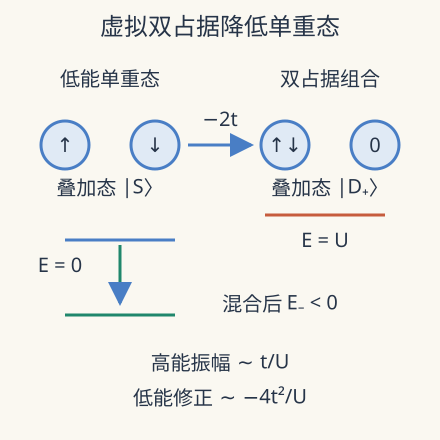

本页目录
强关联与非平衡 I · Hubbard 二聚体：从电荷涨落得到交换作用
先修：相同粒子、微扰论、固体磁性。这是四讲路线的起点：先精确解最小相互作用模型，再研究临界、热化与开放驱动。矩阵计算只需二阶行列式；从双站点推广到材料还需要多体统计与数值方法。
电子不愿住在同一格，为什么反而产生了自旋关联？
1. 把竞争写成可以算的模型
两个格点放两个自旋为 \(1/2\) 的费米子。跃迁幅度 \(t>0\) 希望电子在两点之间离域；同点排斥 \(U\ge0\) 惩罚双占据。取相同的格点能量为零，哈密顿量是
\(c^\dagger\) 创建电子，\(n=c^\dagger c\) 数电子；\(t,U,H\) 都有能量单位。半填充在这里指每格平均一个电子，而不是每一次测量都恰好一个。粒子数守恒，但每个格点的粒子数不守恒。这个区别让虚拟双占据成为可能。
把“电子绕开彼此”只画成两个小球是不够的。费米统计约束的是态的交换符号，决定哪些跃迁振幅相加、哪些抵消。以下固定费米轨道顺序 \((1\uparrow,1\downarrow,2\uparrow,2\downarrow)\)，以免把基底相位误当成物理效应。
2. 六维空间为什么缩成二阶矩阵
四个轨道选两个电子有六个占据基矢；这里“基矢”指 basis vector，不是六个最低能态。为把符号算到底，缩写 \(c_1=c_{1\uparrow},c_2=c_{1\downarrow},c_3=c_{2\uparrow},c_4=c_{2\downarrow}\)，并总按编号递增排列创建算符：
| 占据基矢 | 创建算符定义 |
|---|---|
| \(D_1=\lvert\uparrow\downarrow,0\rangle\) | \(c_1^\dagger c_2^\dagger\lvert0\rangle\) |
| \(A=\lvert\uparrow,\downarrow\rangle\) | \(c_1^\dagger c_4^\dagger\lvert0\rangle\) |
| \(B=\lvert\downarrow,\uparrow\rangle\) | \(c_2^\dagger c_3^\dagger\lvert0\rangle\) |
| \(D_2=\lvert0,\uparrow\downarrow\rangle\) | \(c_3^\dagger c_4^\dagger\lvert0\rangle\) |
| \(T_+=\lvert\uparrow,\uparrow\rangle\) | \(c_1^\dagger c_3^\dagger\lvert0\rangle\) |
| \(T_-=\lvert\downarrow,\downarrow\rangle\) | \(c_2^\dagger c_4^\dagger\lvert0\rangle\) |
利用 \(\{c_i,c_j^\dagger\}=\delta_{ij}\)、\(\{c_i,c_j\}=0\)。作用一个湮灭算符时，每跨过一个不同轨道的创建算符就多一个负号；创建新电子后，再按固定顺序排列也可能产生负号。例如 \(c_2^\dagger c_4 A=-c_2^\dagger c_1^\dagger\lvert0\rangle=D_1\)，两个负号抵消。对 \(B\) 则 \(c_1^\dagger c_3 B=-D_1\)，只留下一个负号。
下面逐项列出跃迁部分 \(H_t=-t(c_1^\dagger c_3+c_3^\dagger c_1+c_2^\dagger c_4+c_4^\dagger c_2)\) 在四个相关态上的作用；表内每项已包含 \(-t\)。
| 算符项 | \(A\) | \(B\) | \(D_1\) | \(D_2\) |
|---|---|---|---|---|
| \(-tc_1^\dagger c_3\) | \(0\) | \(+tD_1\) | \(0\) | \(-tA\) |
| \(-tc_3^\dagger c_1\) | \(-tD_2\) | \(0\) | \(+tB\) | \(0\) |
| \(-tc_2^\dagger c_4\) | \(-tD_1\) | \(0\) | \(0\) | \(+tB\) |
| \(-tc_4^\dagger c_2\) | \(0\) | \(+tD_2\) | \(-tA\) | \(0\) |
相加可得 \(H_tA=-t(D_1+D_2)\)、\(H_tB=+t(D_1+D_2)\)。同自旋的 \(T_\pm\) 则每项要么湮灭空轨道，要么向已占据轨道创建电子，全部为零。总自旋守恒，把这六维空间分成三个三重态与三个单重态。一个单重态是两格各一个电子的
另一个是对称双占据 \(|D_+\rangle=(|\uparrow\downarrow,0\rangle+|0,\uparrow\downarrow\rangle)/\sqrt2\)。逐项表给出
而 \(|T_0\rangle=(A+B)/\sqrt2\) 的两组振幅恰好抵消，\(H_t|T_0\rangle=0\)。同样从表中得 \(H_tD_1=H_tD_2=-tA+tB\)，所以 \(H_t|D_+\rangle=-2t|S\rangle\)，\(H_t|D_-\rangle=0\)。矩阵的两侧非对角元相同，也核对了厄米性。
停下来验收：若把基矢 \(B\) 改成 \(B'=-B\)，能否只把表中的 \(B\) 列反号，仍保留 \(|S\rangle=(A-B')/\sqrt2\)？
核对基底相位与物理态
不能。同一个物理单重态现在是 \((A+B')/\sqrt2\)，态坐标与算符矩阵必须一起变换。只改一列而不改对应行还会破坏厄米性。合法换基不改变本征值，却会改变矩阵元和态的坐标表达。
反对称双占据态能量为 \(U\)，与这个块解耦。三重态不能耦合到同点自旋单重的双占据，能量为零。于是基态来自二阶特征方程
这不是平均场：对本模型、本粒子数，它是精确结果。由于 \(E_-<0\)，有限 \(t\) 时单重态比三重态低。两个格点没有热力学相变；这里得到的是局部能级结构。

3. 消去高能态，交换常数怎样出现
当 \(U\gg t\)，展开平方根：\(\sqrt{U^2+16t^2}=U+8t^2/U+O(t^4/U^3)\)。于是
在各格恰一个电子的低能子空间，有效哈密顿量可写成 \(H_{\rm eff}=J(\mathbf S_1\cdot\mathbf S_2-1/4)\)，这里令自旋算符无量纲。单重态的内积为 \(-3/4\)，三重态为 \(1/4\)，因此能量分别为 \(-J,0\)，和精确谱的强耦合极限一致。
也可直接从两个分量看近似：若基态为 \(a|S\rangle+b|D_+\rangle\)，第二行给 \(b=2ta/(U-E)\)。在 \(|E|\ll U\) 时代回第一行，得到 \(E\simeq-4t^2/U\)。被消去的振幅约为 \(t/U\)，能量修正约为 \(t^2/U\)；“占据很少”并不等于“对低能量没有影响”。
4. 能量导数可以读出什么
Hellmann–Feynman 定理给出基态的总双占据概率
\(D\) 是“两格中出现一个双占据”的概率；每格平均双占据为 \(D/2\)。在 \(U=0\) 时 \(D=1/2\)，强排斥时 \(D\sim4t^2/U^2\)。总粒子数仍然是 2，双占据增加一定伴随另一格空穴。
实验将能量以 \(t\) 为单位，改变 \(u=U/t\)。先预测：把 \(u\) 增大十倍，\(D\) 与 \(J/t\) 会按同样倍数下降吗？强耦合时一个是平方反比，一个是一次反比。
调节排斥与跃迁的比值，比较精确单重态—三重态间隔和强耦合估计，并观察双占据。
默认静态核对：\(u=4\) 时 \(E_-/t=2-2\sqrt2\approx-0.828427\)，\(J/t=0.828427\)，\(D=(1-1/\sqrt2)/2\approx0.146447\)。近似 \(4/u=1\) 高估间隔约 \(20.7\%\)；\(u=0\) 时精确 \(J/t=2\) 有限，而 \(4/u\) 不可用。图上因此不在零点画这条近似。
还可以独立检查自旋关联。双占据与空格没有局域自旋，而分居两格的分量是单重态，所以 \(\langle\mathbf S_1\cdot\mathbf S_2\rangle=-3(1-D)/4\)。零排斥时它为 \(-3/8\)，强排斥时趋近 \(-3/4\)。注意，如果实验只保留每格恰一个电子的测量样本，得到的是条件关联；在本基态中条件值总为 \(-3/4\)。筛选前后得到不同数字，并不说明两次实验采用了不同的 Hamiltonian，而是统计对象变了。报告关联时必须同时给出筛选规则与保留比例。
5. 从二聚体走向研究问题
把二聚体铺成晶格，会出现环交换、移动空穴和不同尺度的关联。半填充且大 \(U/t\) 的展开是受控入口；掺杂后空穴在低能子空间直接移动，不能把整个问题继续缩成只有自旋的 Heisenberg 模型。真实多轨道材料还可能有长程库仑作用、晶格耦合及轨道简并。
量子气体显微镜提供了独立于经典计算的模型检验。Mazurenko 等于 2016-12-26 提交、2017-05-25 期刊发表的工作在约 80 格点中测量了有限尺寸反铁磁关联。样品范围的长程关联不等于二维连续自旋对称体系在任意有限温度都有热力学长程序，也没有直接证明掺杂超导。
近期实验窗口，2025-01-01 发表：Bourgund 等在约 110 格点的混合维度冷原子系统中，用交替势能抑制一个方向的真实跃迁，同时保留经虚拟双占据产生的自旋交换。这正是本讲机制的可调推广。他们用电荷与高阶自旋关联观察到个别条纹形成的前驱迹象；模型具有专门设计的各向异性，结论不是均匀二维模型已出现完整条纹长程序，更不是超导已经被观测。实验原论文
可推进的研究窗口是同时比较电荷、局域自旋与长距离配对，而不是用一个最近邻负关联宣布完整相图。数值研究还要说明边界、温度、尺寸以及误差随键维或采样量的变化。二聚体提供的是这些复杂方法必须先过的精确基准：若连 \(D=\partial_U E\) 都不一致，先查实现与约定，再解释“新相”。
6. 两道迁移题
题 1。 保持 \(U\) 固定，把小 \(t/U\) 条件下的 \(t\) 加倍。\(J\) 与 \(D\) 的最低阶结果分别怎样变化？
核对题 1
两者都约变为四倍，因为 \(J\sim4t^2/U\)、\(D\sim4t^2/U^2\)。但继续增大 \(t\) 后强耦合展开失效；不能无条件外推这一倍数。
题 2。 有程序称 \(U=0\) 时基态能量为 \(-2t\)，且每格双占据为 \(1/2\)。哪一项错了？
核对题 2
能量正确；总双占据为 \(1/2\)，每格只有 \(1/4\)。两电子占据成键轨道时展开出四种等概率占据配置，其中两个是双占据配置。检查“每格”与“全系统”能避免相差 2 的错误。
速查与原始阅读
\(E_-=(U-\sqrt{U^2+16t^2})/2\)，\(D=\partial_UE_-\)；\(J\simeq4t^2/U\) 只适用于强排斥低能子空间。二聚体能说明交换机制，不能承载晶格相变结论。
- Carrascal 等：Hubbard 二聚体的精确结构与近似比较，2015-02-07 首发，作者研究综述。
-
Mazurenko 等：冷原子有限晶格反铁磁实验，2016-12-26 首稿；Nature 期刊版，2017-05-25 发表。实验条件与有限尺寸限定见正文。
-
Bourgund 等：混合维度 Hubbard 系统中的个别条纹，2025-01-01 期刊实验论文；受控耦合推进了虚拟交换机制，结论限于所测关联与前驱结构。
来源核查：2026-09-08。下一讲：量子临界与有限尺寸。